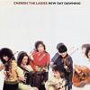

Celtic Lyrics Corner > Artists & Groups > Cherish The Ladies > New Day Dawning
|  |
New Day Dawning
(1996) |
| Tracks : |
1. Highway To Kilkenny
2. Green Grow The Rushes Oh 3. Barrel Rafferty's Jigs 4. A Neansaí Mhíle Grá 5. Crowley's Reels/Tom Ward's Downfall 6. The Green Cottage Polkas 7. Lord Mayo 8. The Galway Rover 9. Joe Ryan's Barn Dance Set 10. Ned Of The Hill (Eamon An Chnoic) 11. Broken Wings 12. Rayleen's Reel 13. Keg Of Brandy |